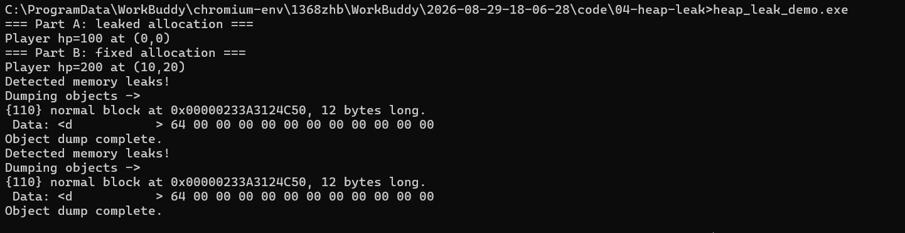
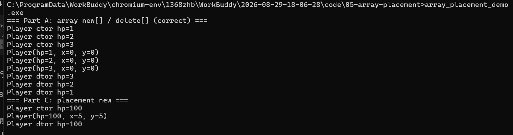
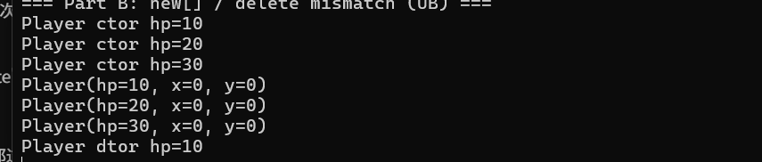
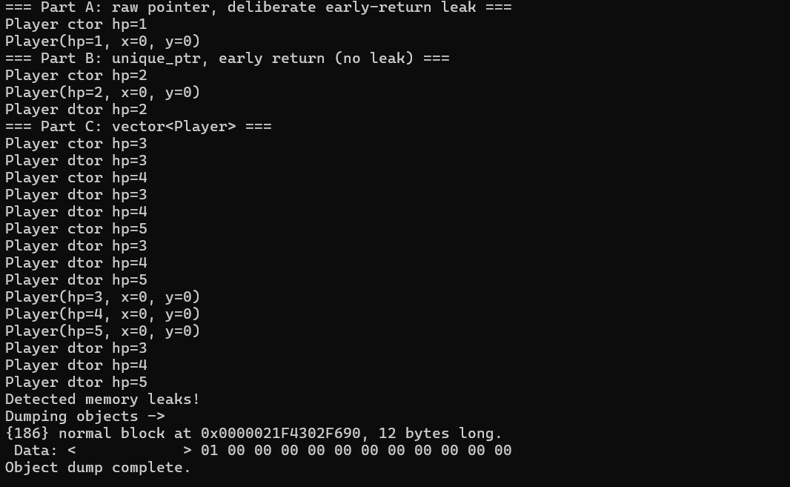

学员：韦扬 ｜ 阶段：S1（W1–W12）C++ 内存模型 + Windows 进程/内存 ｜ 周期：2026-09-21 ~ 2026-09-25 性质：W4D4 收口笔记，把 D1（堆泄漏）/ D2（数组与 placement new）/ D3（RAII 与智能指针）串成一条「释放责任演进线」。 验收：四节齐全 + 数组头/逆序析构布局图 + 4 张实锤截图 + 口述全过。
事实：C++ 堆内存管理是一条「释放责任」的演进线——从 D1 的裸 new/delete（靠人记得还，会漏），到 D2 的 new[]/delete[] 配对（配错直接炸），再到 D3 的 RAII 智能指针（把「还资源」焊死在对象析构上，编译器 100% 保证执行）。三天练的不是三个孤立知识点，而是同一件事越做越稳。
我的话（你 D3 口述原话，可直接用）：裸指针的 delete 在提前 return 和抛异常时会被跳过——不管你是正常跑完、中途 return、还是中间炸异常，栈对象一出作用域，析构 100% 跑。把「释放资源」从「你记得在某条分支里手动调」变成「编译器保证在出口执行」。
事实：程序跑起来，内存大致分几个区（D1 实测地址量级）：栈 ≈ 825GB、堆 ≈ 2.85TB、模块（代码/静态区）≈ 140TB。栈上的变量「函数一返回就没了」，由编译器自动分配/回收，速度快但生命周期被作用域绑死、空间也有限；堆上的变量是你自己 new 出来的，能活过创建它的函数，寿命由你控制，但「还」这件事得你自己（或 RAII）负责，管不好就漏。
我的话（你 D4 填的原话）：栈变量 = 你去图书馆自习，前台给你一个临时座位。你坐下把书放桌上（局部变量）。一起身离开（函数返回），管理员立刻把桌子清空，书直接扔了。你再想回去拿那本书（返回局部变量地址），桌上可能已经坐了别人，书早没了。堆变量 = 你租了个私人储物柜。把东西放进去然后离开图书馆（函数返回），柜子还是你的、东西还在，只要不退租（free）。但钥匙（指针）弄丢了，柜子就永远锁着、别人用不了你也拿不回——这就是内存泄漏。
事实：
- new T(args) = ①向堆申请一块够大的内存 ②在那块内存上调构造函数初始化。delete p = ①调析构函数 ②把内存还回堆。两步顺序正好反过来。
- 泄漏 = new 了但忘了 delete：内存一直被你占着、没人还，程序跑久了就越占越多。
- 怎么抓泄漏（Windows / MSVC Debug 版）：_CrtSetDbgFlag(_CRTDBG_ALLOC_MEM_DF | _CRTDBG_LEAK_CHECK_DF) 让程序退出时自动清点；也可以手动调 _CrtDumpMemoryLeaks()。关键坑：CRT 默认把报告发到 OutputDebugString，在 cmd 里直跑 exe 看不到，必须把报告模式改道 stderr（_CrtSetReportMode(_CRT_WARN, _CRTDBG_MODE_DEBUG | _CRTDBG_MODE_FILE) + _CrtSetReportFile(_CRT_WARN, _CRTDBG_FILE_STDERR)）。报告里 Data: 01 00 00 00 这种小端字节，就是 hp=1，能直接读出漏的是哪个对象。
我的话（你 D3 口述原话，可直接用）：裸指针的 delete 在提前 return 和抛异常时会被跳过。你今天 Part A 就是提前 return 漏的——代码里 return; 一跳，后面的 delete 根本没机会执行。这就是「靠小心」不靠谱的地方：分支一多、一抛异常，人写的 delete 就被绕过去了。

小注：这张是修好「报告能不能看见」之后、还没修「报告打两遍」之前的输出——所以Detected memory leaks!出现了两次（_CRTDBG_LEAK_CHECK_DF自动 dump 一次 + 显式_CrtDumpMemoryLeaks()又一次）。只留一个 dump 源之后就只剩一份了。留着这张图是提醒自己：排障是逐个坑拔的，先把"看不见"修成"看得见"，再修"看得见但重复"。
事实：
- new T[n] 不是只申请 n*sizeof(T) 字节，编译器会在对象数组前面偷偷加一个「数组头」存 count（元素个数）。delete[] 时：读头 → 逆序从最后一个元素往前调 n 次析构 → 把整块（含头）一起释放。
- 配错 = 用 new T[n] 配 delete p（少了 []）：不读数组头 → 只调 1 次析构 + 释放尺寸算错 → 未定义行为（UB），直接崩。配错比漏更阴间：漏只是慢慢占内存，配错当场炸。
- placement new new(addr) T(args)：不在堆上新申请内存，而是在你已有的一块内存（比如栈上 char buffer[sizeof(T)]）上直接构造对象。它没有「分配」动作，所以必须手写 p->~T() 收尾，而且绝不可 delete p（那块内存不是它分配的）。栈 buffer 还要 alignas(T) 对齐，否则在没对齐的地址上构造会出问题。
我的话（你 D2 口述原话，可直接用）：delete（配错）只删第一个对象就出问题，程序崩溃。placement new 是在已有内存上建的，拆掉它得自己手写析构函数 ~T()，而且不能去 delete 那个指针——那内存本来就不是它申请的。
布局图（ASCII，照 D2 实测画）：
new Player[3] 的内存布局（每个 Player = hp,x,y 三个 int = 12 字节）：
+------------+-----------+-----------+-----------+
| 数组头 | P0 | P1 | P2 |
| count = 3 | hp,x,y | hp,x,y | hp,x,y |
+------------+-----------+-----------+-----------+
↑ 编译器偷偷加的，delete[] 靠它知道要析几遍
delete[] 时（逆序析构）：
先 P2.~Player() → 再 P1.~Player() → 再 P0.~Player() → 释放整块(含头)
（顺序反过来：P2 → P1 → P0）
错配 delete arr（惨案）：
不读数组头 → 只调 1 次析构(P0) → 释放尺寸算错 → UB / 崩溃贴图 ①（正确配对，看逆序析构）：

new Player[3] → ctor hp=1/2/3（正序构造）；delete[] → dtor hp=3/2/1（逆序）——delete[] 从尾到头逐个析构，这就是和 vector 正序相反的那套约定。图下半截 Part C: placement new 里 Player hp=100, x=5, y=5 后面紧跟一句 Player dtor hp=100，那是我手写的 p->~Player()，placement new 的对象必须自己动手拆，编译器不会管。
贴图 ②（错配 delete 而非 delete[]，实测 UB）：

三个对象全造出来了（ctor hp=10/20/30、print 全打），但 delete arr 只给了 Player dtor hp=10 一次——不读数组头、不逐个析构、还按单对象尺寸去还整块，接下来程序崩（图中输出到此截断）。new[] 必须配 delete[]，这就是活证据。
事实：
- RAII（Resource Acquisition Is Initialization）：资源获取即初始化——把「管一个资源」包进一个对象，资源在构造时拿到、在析构时还。对象一出作用域（不管正常返回、提前 return、还是抛异常），析构 100% 跑，等于把「还资源」焊死在编译器保证的路径上。
- std::unique_ptr<T>：独占一个堆对象，本身是栈上的智能指针对象；它析构时自动 delete 里面的裸指针。所以提前 return 也不漏——栈上的 unique_ptr 退出作用域就析构，顺手把堆对象还了。
- std::vector<T>：内部自己管一个 new[] 出来的堆数组，析构时自动 delete[] 所有元素。它让你彻底告别手写 new[]/delete[]。
- 重点：unique_ptr / vector 底层还是堆，所以 D1/D2 学的「堆 / 泄漏 / 数组头 / 逆序析构」没白学——你只是把「手动还」升级成「编译器替你还」，但对象到底在堆上、怎么析构，那些底层知识照常管用。
我的话（你 D3 口述原话，可直接用）：RAII 真正厉害的地方是：不管你是正常跑完、中途 return、还是中间炸异常，栈对象一出作用域，析构 100% 跑。把「释放资源」从「你记得在某条分支里手动调」变成「编译器保证在出口执行」。提前 return 和抛异常会跳过裸指针的 delete，但跳不过栈对象的析构。
对比表：
| 写法 | 提前 return 会漏吗 | 底层 | 谁负责还 |
|---|---|---|---|
裸 new / new[] | ✅ 会漏（delete 被跳过） | 堆 | 你手写 delete |
std::unique_ptr | ❌ 不漏 | 堆（智能指针对象在栈） | 智能指针析构 |
std::vector | ❌ 不漏 | 堆（内部数组） | vector 析构 |

标出「退出仅 1 块泄漏 = Part A 的 hp=1，B/C 干净」——全程序只有一个 12 字节块，正好证明 unique_ptr/vector 那段没漏。
事实：三天是一条线，不是三块拼盘——
- D1：裸 new/delete → 会漏（忘了还 / 提前 return 跳过）。
- D2：new[]/delete[] 配对 → 会配错（少了 [] 直接崩）；又学了 placement new（最易错，要手写析构、不能 delete）。
- D3：RAII / unique_ptr / vector → 把「释放」焊死在对象析构上，编译器保证执行，提前 return、异常都逃不掉。
一句话：工程里默认用 unique_ptr / vector，裸 new 只在你必须手写底层（比如自己实现读取器内核、对象池）时才用，而且那种地方也要立刻用 RAII 包起来。
我的话（你 D4 修正版，已到位 ✅）：这周认知升级在于：以前以为 new/delete 配对好就万事大吉，现在知道手写 delete 会漏、会跳过、会配错，所以能交给编译器管的（unique_ptr/vector）绝不自己手写，把「释放」焊死在对象析构上才靠谱。
事实 + 引导（这节是灵魂，每点先给事实，后面「我的话」用你自己的话收）：
unique_ptr / vector。少写一行 delete，就少一个通宵调泄漏的夜。vector<byte> 装读出来的内存块、unique_ptr<ProcessHandle> 管进程句柄，比手写 new[]/delete[] 稳得多。我的话（你 D4 填的原话）：手写 delete 有可能在某些情况（提前 return、异常）下根本不执行，结果内存泄漏——因为 p 是局部变量，函数一结束指针就没了，但堆内存还在，又没别处存这个地址，这块内存就永久泄漏了。好比你请了个侦探来查谁偷了东西，结果侦探一进门就自己摔晕了（delete 没跑成），东西（内存）就一直丢着。所以能交给编译器管的（unique_ptr/vector）绝不自己手写 delete，这就是「少写 delete 少熬夜」。
new 没配 delete，一眼判「这有泄漏 bug」；看到 unique_ptr / vector 知道这段 RAII 安全、析构会被自动调。这是读反汇编/源码的基本功——W4D3 你练的「读泄漏报告里 Data: 01 00 00 00 反推对象」就是这基本功的雏形。我的话（你 D4 填的原话）：裸 new 没 delete = 你租了柜子、拿了钥匙，然后人走了钥匙也没还。那个柜子就一直锁着，别人用不了、你也拿不回——这就是内存泄漏。所以逆向看到别人代码裸 new 没配 delete，等于看到有人租了柜子拿了钥匙走人，一眼就知道这柜子（内存）漏了。
我的话（你 D4 填的原话）：你请了个保安（内存检测工具，比如 Valgrind、AddressSanitizer）来帮你抓小偷（内存泄漏）。结果保安自己先晕倒了——意思是：如果你的辅助工具/检测手段自己先崩了，就没人帮你抓泄漏了。所以读目标进程失败/崩了时，RAII 保证已分配的内存自动回收，不会让你的工具自己先「晕倒」。
vector / unique_ptr 接管，比手写 new[]/delete[] 不容易配错，扩容也交给 vector。我的话（你 D4 填的原话）：用 vector/unique_ptr 管一大块内存比手写 new[]/delete[] 稳。
- 本笔记源码在 notes/w4-memory-mgmt-note.md，已转 HTML 发布于本站（w4-memory-mgmt-note.html）。
- 配套代码：code/04-heap-leak、code/05-array-placement、code/06-raii-smartptr（见 GitHub 仓库）。
- 博客站：https://weiyang-xxx.github.io/game-security-notes/
- 注意：公开仓库的 .gitignore 已挡 .workbuddy/ 与编译产物 *.obj/*.exe，发布时别 git add . 整目录。